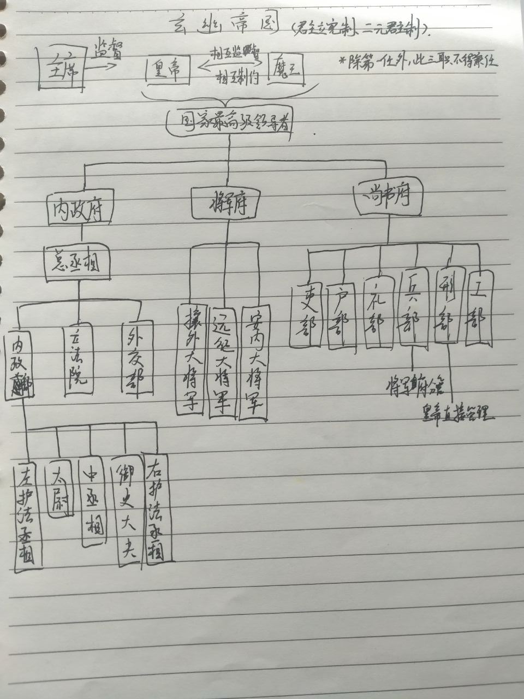
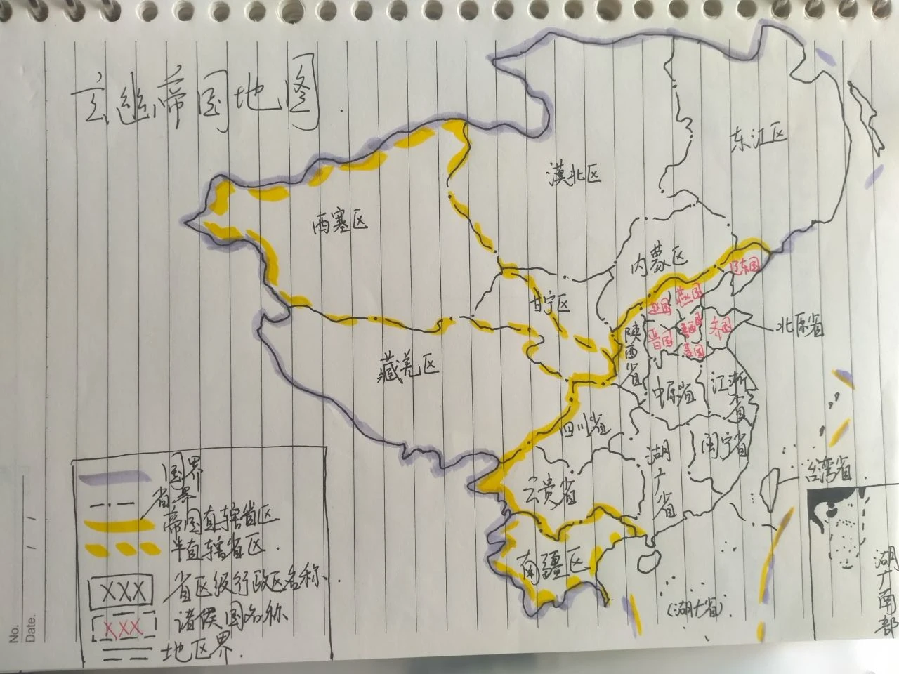

最高统治 · 分职监察
权有所承，责有所归。
建国宪章草案将帝位、魔王之位与主宰监督职分并列，中央各司据此分掌政务。
皇帝与魔王除首任例外不得兼任；正主宰负责监督最高领导人，不掌日常领导权。现任魔王幽汐御极七年，继承既有法统，州县议事席目前仅在少数州县试办。
中央朝廷 · 机构职掌
各司其职，循章而行。
内政府
由总丞相统理内政。中丞相整合政务意见并辅佐执政；左右护法丞相协助保障法令施行；太尉掌皇室军队、军规及地方军队调动；御史大夫监察朝廷官员并呈报异常。
将军府
掌全国军务，大将军由魔王任命。手稿按攘外、应对海外属国求援与守内等职责区分将领；兵部隶属将军府，军令依中央章程执行。
吏部府
以“为国民服务”为职分，草案列吏部、户部、礼部、工部、刑部与兵部。刑部由皇帝直接管理；兵部归将军府统辖，其余各部按职分办理政务。
立法院
帝国法定立法机构，负责制定、修订法律。手稿中未能辨清的具体程序仍待考订。
外交部
帝国法定外交机构，代表国家办理对外交往。宪章主张和平友好，不以强力迫使他国，不干涉他国内政，也不无正当理由断交或宣战。
主宰与御史监察
正主宰监督最高统治者，副主宰协助履职并在缺位时承接职责；御史大夫监察朝廷官员。两类监察各有对象与职分，不代替日常行政。
地方政制 · 沿革提要
封国归制，层级分明。
诸侯封国废止后，地方政务纳入统一行政体系。依现存制度记载，可概括为“中枢统辖—省级区划—市县施行”三层；下图为沿革导览，不替代现行各地的具体办事章程。
- 壹全国政务
中枢朝廷
内政府、将军府、吏部府、立法院、外交部等中央机关，依宪章与政典分掌事务。
中央统辖 · 各司分职 - 贰省级区划
十六省区
地方以十六个省级行政区为框架。旧制中的诸侯封国已撤废，不再作为地方统治层级。
统一区划 · 封国已废 - 叁属地政务
市县与特别市
省区以下设市、县，部分地区另列特别市；地方事务依后续政典及属地章程办理。
市县施行 · 依法循章
制度档案 · 建国初稿
中枢诸司，循图可考。
中央官署关系草图
这幅手绘关系图记录建国初期的中枢设想：皇帝、魔王与主宰分列其上，内政府、将军府、吏部府分掌政务。图中文字与现存宪章底本互为参照，个别模糊字迹不作补写。

疆域舆图 · 地方行政
十六省区，万里一统。
国境纵横东亚，幅员约当元代全盛之时；手绘舆图标示国界、区域界，以及直接与半直接管辖范围。
地方制度以十六个省级行政区为框架，省区以下设市县，部分地区另列特别市。原制曾在北原省划出七个相对独立的诸侯国，后已随历次修订废止；现行行政层级以省区与下级地方单位为主。开国宪章草案列明地方长官通常由当地人民选举，特殊情况下由皇帝或魔王依层级任命；这是底案所列原则，并非幽汐御极七年试办的现况，具体施行细则以修订政典为准。

方向已校正，点击图面可在新标签页查看大图。部分区名与细部边界字迹不清，故作为疆域示意而非现行精确区划图；诸侯国标记属于已废止的旧制。